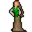

Arensia¶{ .sprite }
| Monster ID | arensia |
| Type | NPC |
| Class | Humanoid |
| HP | 1 |
| Found in | Fallhaven |
| Introduced | v0.7.14 |
Combat stats¶
| Stat | Value |
|---|---|
| HP | 1 |
| Damage | 0 |
| Attack chance | 0 |
| Block chance | 0 |
| Damage resistance | 0 |
| Max AP | 10 |
| Attack cost | 10 AP |
| Attacks per turn | 1 |
| Move cost | 10 AP |
| Critical skill | 0 |
| Critical multiplier | – |
| Crit chance | none (needs critical skill and a multiplier) |
XP formula (from the game's loader): ⌈(attacks per turn × attack chance × average damage × (1 + critical skill × multiplier) × 3 + HP × (1 + block chance) + 9 × damage resistance) × 0.7⌉, +50 if its hits inflict a condition. More Exp adds a percentage on top.
Verified against v0.8.18 monster data and game code (`MonsterTypeParser.java`).
Locations¶
| Map | Region | Up to | Notes |
|---|---|---|---|
| fallhaven_sw | Fallhaven | 1 | – |
Quests¶
- It's knot funny: stages 1, 91, 100, 101, 102, 103
- You're the postman: stages 20
Dialogue simulator¶
Set up your situation (quest stages, items, kills…), then talk to Arensia. The simulator follows the game's own rules: it takes the same silent checks, offers only the options you'd really see, and applies their effects (quest stages, items handed over, rewards) as you go.
Rules verified against v0.8.18 game code (ConversationController.java) and dialogue data.
Dialogue (45 lines)
What the dialogue says, exactly as in the game files. Lines are listed once; links jump to the line a choice leads to.
arensia Arensia: “Hello, dear.”
- “I have a letter for you.” (if carry 1× Gorwath's letter) → arensia_letter
- “Hello. I am wondering if you could help me?” (if latest stage of A Wicked witch is 10) → arensia_witch_10
- “You seem tired. Is everything alright?” (if NOT reached stage 1 of It's knot funny) → arensia_lytwing_select
- “About the lytwings ...” (if reached stage 1 of It's knot funny; NOT reached stage 102 of It's knot funny; NOT reached stage 103 of It's knot funny) → arensia_lytwing_select
- “Have the lytwings honored their word?” (if reached stage 100 of It's knot funny; wearing Arensia's Ring of Promise) → arensia_lytwing_34
- “Hello.” → arensia_done
arensia_letter Arensia: “A letter? From whom?”
- “It is from Gorwath, of Crossgl...” → arensia_letter_10
arensia_witch_10 Arensia: “Of course, my dear.”
- “Did you see a witch around here or hear about a witch kidnapping a girl?” → no_witch_info
arensia_lytwing_select (silent check: the first matching branch below is taken)
- branch 1 (if NOT reached stage 1 of It's knot funny) → arensia_lytwing_1
- branch 2 (if reached stage 101 of It's knot funny) → arensia_lytwing_22
- branch 3 (if NOT reached stage 12 of It's knot funny) → arensia_lytwing_5
- branch 4 (if NOT reached stage 99 of It's knot funny) → arensia_lytwing_6
- branch 5 (if reached stage 100 of It's knot funny; NOT reached stage 102 of It's knot funny) → arensia_lytwing_24
- branch 6 (if reached stage 100 of It's knot funny; NOT reached stage 103 of It's knot funny) → arensia_lytwing_24
- branch 7 → arensia_lytwing_23
arensia_lytwing_34 Arensia: “They have, I no longer wake up with fairy-locks.”
- “I am happy to hear that.” (if reached stage 102 of It's knot funny) → arensia_lytwing_35
- “I am happy to hear that.” (if reached stage 103 of It's knot funny) → arensia_lytwing_36
arensia_done Arensia: “What a beautiful day, isn't it?”
arensia_letter_10 Arensia: “Oh really? Give it to me - quickly!”
- “Here it is.” (if hand over 1× Gorwath's letter) → arensia_letter_20
no_witch_info Arensia: “No, I'm sorry, I didn't.”
- “Oh, thanks anyway.” → conversation ends
arensia_lytwing_1 Arensia: “My sleep has been very restless lately.”
- “Oh no, why are you not sleeping well?” → arensia_lytwing_2
arensia_lytwing_22 Arensia: “There is nothing else to be done, and I will have to live with the lytwings tormenting me until my last day.”
arensia_lytwing_5 Arensia: “Have you found them yet?”
- “Not yet. I still need to go talk with Rigmor to find out more.” (if latest stage of It's knot funny is 1) → arensia_lytwing_33
- “Not yet. I am still looking for their mushroom patch. You wouldn't know where it is, perhaps?” (if latest stage of It's knot funny is 10) → arensia_lytwing_27
- “I did, they asked that I bring them a gift of apples and strawberries.” (if latest stage of It's knot funny is 11) → arensia_lytwing_11
arensia_lytwing_6 Arensia: “Please tell me you have good news?”
- “They accepted the gift and will allow me to talk to them.” (if latest stage of It's knot funny is 12) → arensia_lytwing_8
- “The lytwings are upset that you took their mushrooms. I pleaded with them, and am now waiting on their decision.” (if latest stage of It's knot funny is 13) → arensia_lytwing_10
- “I have, and they agreed to stop pestering you if I help cut down a tree for them.” (if latest stage of It's knot funny is 20) → arensia_lytwing_7
- “The lytwings changed their minds, and are now thinking of something else they want instead.” (if latest stage of It's knot funny is 21) → arensia_lytwing_13
- “They now want four bottles of mead. They sure are giving me the run around today!” (if latest stage of It's knot funny is 30) → arensia_lytwing_14
- “They took the mead, but said they need something else.” (if latest stage of It's knot funny is 31) → arensia_lytwing_28
- “They want a dozen wild flowers.” (if latest stage of It's knot funny is 40) → arensia_lytwing_30
- “They took the wild flowers ...” (if latest stage of It's knot funny is 41) → arensia_lytwing_18
- “The lytwings ask that you make a promise to never pick mushrooms from their fairy ring again.” (if latest stage of It's knot funny is 90) → arensia_lytwing_19
- “I will take your ring to them at once!” (if latest stage of It's knot funny is 91) → arensia_lytwing_32
- “I gave them your ring, they are busy discussing it now.” (if latest stage of It's knot funny is 92) → arensia_lytwing_32
arensia_lytwing_24 Arensia: “I cannot thank you enough, $playername. You have saved my sanity!” — effects: sets stage 100 of It's knot funny
- “Unfortunately they kept your mother's ring (Lie).” → arensia_lytwing_25
- “They used their magic on your ring, and asked that I give it back to you.” → arensia_lytwing_26
arensia_lytwing_23 Arensia: “So ... what did they say?”
- “The lytwings finally agreed to leave you in peace.” → arensia_lytwing_24
arensia_lytwing_35 Arensia: “But I see you have the ring I gave them. You told me they kept it, which can only mean that you lied to me. You are just a common thief. Shame on you.”
- “But, I ... um ....” → conversation ends
arensia_lytwing_36 Arensia: “I see you have my magical ring. I hope it serves you well, you deserve it.”
- “I keep it safe, and it keeps me safe in return.” → conversation ends
arensia_letter_20 Arensia: “[Reading] Oh that's cute. Tell Gorwath I love him too.” — effects: sets stage 20 of You're the postman
- “I'll be happy to tell him that.” → conversation ends
arensia_lytwing_2 Arensia: “I am being taunted by naughty lytwings at night. At least that is what Rigmor tells me. They play with my hair while I sleep, and tangle it into fairy-lock knots. Every morning I wake up tired, and I spend an hour brushing out the knots.…”
- “I am sorry to hear that, but I cannot help you right now.” → arensia_lytwing_3
- “That sounds awful, can I help in any way?” → arensia_lytwing_4
arensia_lytwing_33 Arensia: “You should talk to Rigmor, as she knows more about the lytwings than I do. She lives here in Fallhaven, just go north past the tavern.” — effects: sets stage 1 of It's knot funny
- “Okay.” → conversation ends
arensia_lytwing_27 Arensia: “I can't say that I have noticed it. A few days ago I was picking mushrooms to the west of here.”
arensia_lytwing_11 Arensia: “Oh wonderful! An odd request nonetheless.”
- “I better go and find those fruit.” → conversation ends
- “Where can I find apples and strawberries?” → arensia_lytwing_12
arensia_lytwing_8 Arensia: “Please keep me updated.”
- “I will.” → conversation ends
arensia_lytwing_10 Arensia: “Okay thanks for letting me know. Don't let them wait too long.”
- Next → arensia_lytwing_8
arensia_lytwing_7 Arensia: “Oh that is great news! If you need an axe, check with Jakrar, my father, over there.”
- Next → arensia_lytwing_8
arensia_lytwing_13 Arensia: “Oh no, they sound very difficult to deal with. I hope it gets better.”
- “Thank you.” → arensia_lytwing_8
arensia_lytwing_14 Arensia: “I am so sorry.”
- Next → arensia_lytwing_8
arensia_lytwing_28 Arensia: “They sure are a greedy bunch!”
- Next → arensia_lytwing_8
arensia_lytwing_30 Arensia: “How can I help?”
- “Where can I find wild flowers?” (if NOT carry 1× Wild Flower) → arensia_lytwing_31
- “I found some wild flowers, I just need a few more.” (if carry 1× Wild Flower; NOT carry 12× Wild Flower) → arensia_lytwing_37
- “I have found a dozen wild flowers. I will take them to the lytwings.” (if carry 12× Wild Flower) → arensia_lytwing_37
- “Will this ever end?” → arensia_lytwing_15
arensia_lytwing_18 Arensia: “Oh please tell me that is the end of it?”
- “I'm afraid not, they still want more.” → arensia_lytwing_15
arensia_lytwing_19 Arensia: “Of course! anything!”
- “You have to make this promise to a piece of jewellery, which I will take back to them.” → arensia_lytwing_20
arensia_lytwing_32 Arensia: “Oh I hope they accept it, and I hope they are done with their silly errands.”
- “Me too.” → conversation ends
arensia_lytwing_25 Arensia: “That is okay. I did not expect to get it back.” — effects: sets stage 102 of It's knot funny
- Next → arensia_lytwing_9
arensia_lytwing_26 Arensia: “After everything you have done for me ... I want you to keep it. Please, I insist!” — effects: sets stage 103 of It's knot funny
- “That is very generous, I won't forget it.” → arensia_lytwing_9
arensia_lytwing_3 Arensia: “I understand. I guess I will just have to live with their mischief, and hope that I don't lose my hair, or my sanity!”
- “Good luck.” → conversation ends
arensia_lytwing_4 Arensia: “You would be willing to help me? I would be so grateful if you could make them leave me alone.”
- Next → arensia_lytwing_33
arensia_lytwing_12 Arensia: “You can buy apples at the Fallhaven tavern. Not sure about strawberries though.”
- “OK, thanks anyway.” → conversation ends
arensia_lytwing_31 Arensia: “Look to the south, and southeast from here. You will see the wild flowers growing next to the trees.”
- Next → arensia_lytwing_30
arensia_lytwing_37 Arensia: “Those flowers look perfect.”
arensia_lytwing_15 Arensia: “You have done so much for me already. I will understand if you want to quit, I won't blame you.”
- “I want to see this through.” → arensia_lytwing_16
- “The lytwings are driving me insane. I thought about this, and I can't help you any more. I am sorry.” → arensia_lytwing_29
arensia_lytwing_20 Arensia: “I know, I will promise on this ring I'm wearing. It belonged to my mother, and it's dear to me, but I will do anything to stop the lytwings!”
- “I hope this works.” → arensia_lytwing_21
arensia_lytwing_9 Arensia: “Thank you so much for helping me with the lytwings!”
- “You are welcome!” → conversation ends
arensia_lytwing_16 Arensia: “You are too kind!”
- Next → arensia_lytwing_8
arensia_lytwing_29 Arensia: “Are you sure that you want to quit?”
- “Yes, I want to quit.” → arensia_lytwing_17
- “On second thought, I want to see this through.” → arensia_lytwing_16
arensia_lytwing_21 Arensia: “I made a promise to the ring, here take it to the lytwings!” — effects: gives 1× Arensia's Ring of Promise, sets stage 91 of It's knot funny
- “I will, right away!” → conversation ends
arensia_lytwing_17 Arensia: “I appreciate your help either way.” — effects: sets stage 101 of It's knot funny
- “Goodbye.” → conversation ends
Version history¶
| Version | Change |
|---|---|
| v0.7.14 | Added Dialogue: 5 lines added |
| v0.8.8 | Dialogue: 2 lines added |
| v0.8.12.1 | Dialogue: 38 lines added, 1 line changed · text: “null” → “Hello, dear.” |
Verified against v0.8.18 and every earlier release back to v0.7.0 (game data compared release by release).
Community notes¶
Written by players, not generated from game data. Observations: what players notice in-game · Lore: the in-world story · Trivia: real-world facts, references, development history · Theory / speculation: unconfirmed ideas; may just be unfinished content
Observations¶
Nothing here yet. Know something? Add it.
Lore¶
Nothing here yet. Know something? Add it.
Trivia¶
Nothing here yet. Know something? Add it.
Theory / speculation¶
Nothing here yet. Know something? Add it.
Technical information
| Monster ID | arensia |
| Spawn group | arensia |
| Loot table | – |
| Conversation | arensia |
| Faction | – |
| Movement | – |
| Icon | monsters_ld1:145 |
| Defined in | res/raw/monsterlist_gorwath.json |
Raw data:
{
"id": "arensia",
"name": "Arensia",
"iconID": "monsters_ld1:145",
"monsterClass": "humanoid",
"spawnGroup": "arensia",
"phraseID": "arensia"
}
Data from v0.8.18